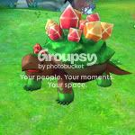

Re: [Data]ข้อมูลBoss [Version 1.0]
1.บอสClycropด้วยครับ
2.เห็นเซิฟญุ่นมีบอสเมดูซ่าไฟไม่รู้เซิฟไทยจะมีป่าว
2.เห็นเซิฟญุ่นมีบอสเมดูซ่าไฟไม่รู้เซิฟไทยจะมีป่าว
http://eco.froztic.in.th/archive/ecofanclub/
http://eco.froztic.in.th/archive/ecofanclub/viewtopic.php?f=23&t=75857
freedom? เขียน:รองBoss และ บอสไม่มีลูกบอส
Rock Turtle
Level : 100
HP : 750,000
EXP / Job EXP : 75,000 / 90,000
Attribute :
Personality : Non Active
Map : Waterlayer
Item : Mold [PT] , Heart Ruby , Tortoise Shell , Turtle Ruck(Black) , Shoulder Devil Boost , Turtle Ruck(Black) , Shoulder Devil Boost
เวลาเกิด: 60 นาที
Skill: Gravity Fall / Land Crack / Grand Cross /Earth Cry / Rope of Eternity
summon ลูกบอสทั้งหมด:
อื่นๆ: เมื่อHp ตํ่ากว่า70% จะใช้สกิว Earth Cry ทุกๆ1นาที

LIFE เขียน:freedom? เขียน:รองBoss และ บอสไม่มีลูกบอส
Rock Turtle
Level : 100
HP : 750,000
EXP / Job EXP : 75,000 / 90,000
Attribute :
Personality : Non Active
Map : Waterlayer
Item : Mold [PT] , Heart Ruby , Tortoise Shell , Turtle Ruck(Black) , Shoulder Devil Boost , Turtle Ruck(Black) , Shoulder Devil Boost
เวลาเกิด: 60 นาที
Skill: Gravity Fall / Land Crack / Grand Cross /Earth Cry / Rope of Eternity
summon ลูกบอสทั้งหมด:
อื่นๆ: เมื่อHp ตํ่ากว่า70% จะใช้สกิว Earth Cry ทุกๆ1นาที
เพิ่มskillให้


Yuichisama เขียน:บอสหมีขาวยังดรอปShoulder Devil Boost ได้อยู่หรอครับ

Mokghaha เขียน::second05: แฟนใครกันหนอ ช่างเก่งเกินใคร ขอบคุนมากๆ เลยสำหรับข้อมูล อยากได้บี้พอดีคับ..ว่าแต่ว่า น่าจะแนะนำอาชีพที่ไปตีด้วยนะ แหะๆๆๆ
นู๋ขอโทด..ผิดไปแล้วคร้าบบบบบบบบบบ